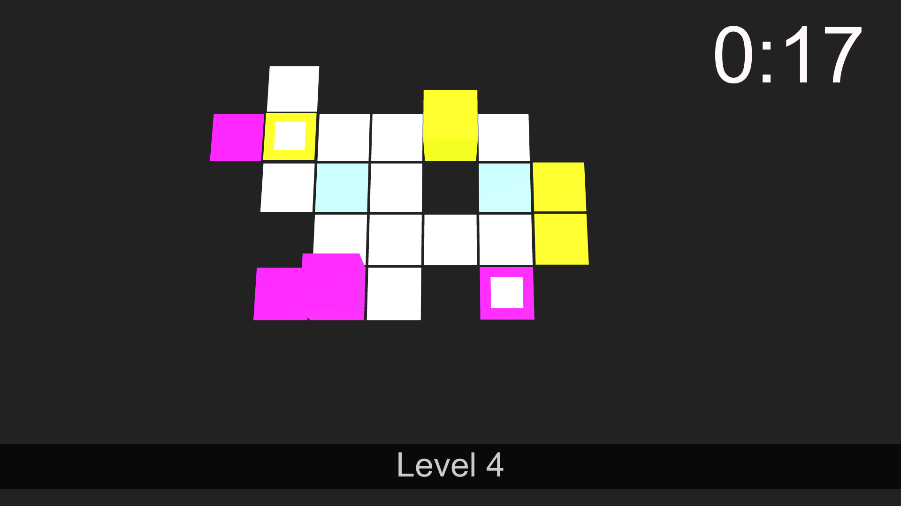

Car Crash
This game created 2 years back, it is about the player who is driving on the wrong side of the road and must try to avoid any incoming cars.

Illusion
This game is about recreation of the classic sliding-picture block puzzle but with a twist in terms of the illusion of the pictures, the spinning blocks and timer

Find
This game is about finding the path for each of the block characters however the player is in control of both the blocks characters.
This game features inverse mechanic- whereby the block characters move in opposite direction.
